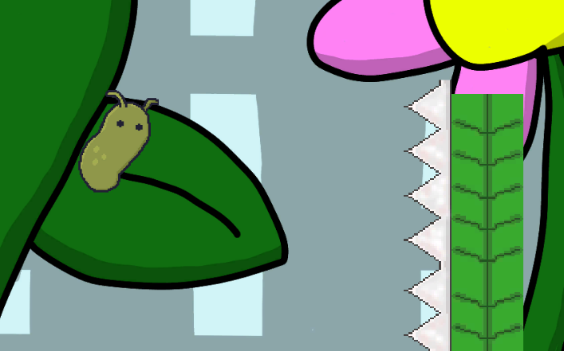

You are the Slug Boy, a slug who has aspirations for great adventure. You will embark on a journey across the bug kingdom in order
to achieve your potential. Tired of being told you're nothing but a lowly slug, you will travel across the great backyard to the tree.
A mystical beacon that all bugs and backyard life aspire to reach. At the top holds untold power, something that you as the Slug Boy wish to reach.

Run and Jump Across many Obstacles
The journey won't be easy, for it is a treacherous path to reach the tree. You will have to endure many hardships, avoid salt, jump over spikes, and outmaneuver your enemies.
You are no fighter, but that doesn't mean you don't have a few tricks up your sleeve! As the Slug Boy, you have an inherent ability to jump, climb, and run great distances to avoid
your foes. But be careful, for there are stories of a great beast lurking around the base of the tree, ready to take on any foolish enough to aproach it...